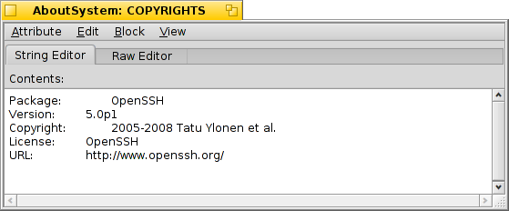

DiskProbe
DiskProbe
| Deskbar: | ||
| Location: | /boot/system/apps/DiskProbe | |
| Settings: | ~/config/settings/DiskProbe_data |
DiskProbe is a HEX editor to view and alter data of a file or on a device on a byte-level. It's a very low-level tool and has therefore the potential to really mess things up if you're not careful!
When starting DiskProbe you'll first be asked for the file or the device to work on. After that you are presented with this interface:

The main view shows always one block of data, the size of which can be adjusted with . To the left is the offset to the start of the block, in the middle the data as HEX values and to the right the same as ASCII symbols.
You can move from block to block with the slider above or with ALT ← and ALT → and switch between the HEX and ASCII columns with TAB.
will not only show the selection with different endianess (and different radix), it will also interprete the selection as a block offset that you can jump to. It will be grayed out if the position is outside of the file/device.
This is a handy feature mostly when looking at file systems, as they often contain pointers to other blocks.
If the file you're probing includes attributes, the menu can be used to open any of them in a new DiskProbe window. Here's the copyright attribute of the AboutSystem application:

Depending on the kind of attribute, you'll get a different editor tab besides the always present Raw Editor. For example, there are editors for strings and MIME types or an icon viewer for the vectoricon attribute.